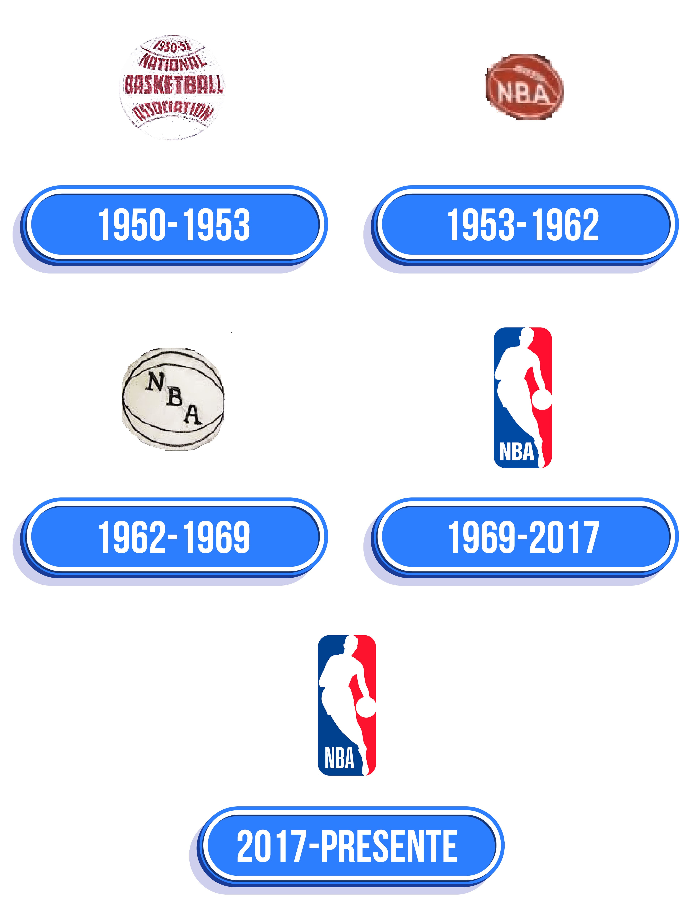
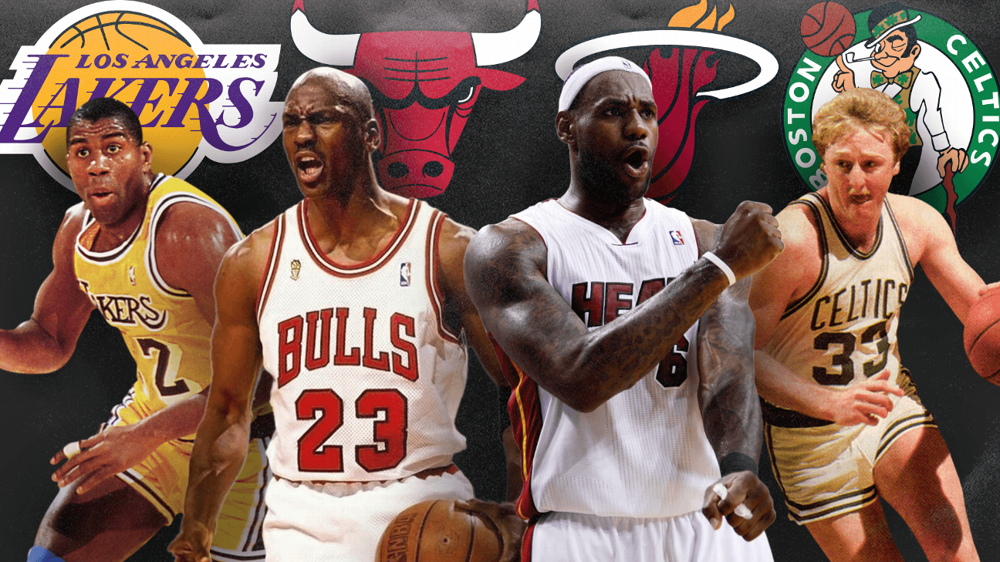
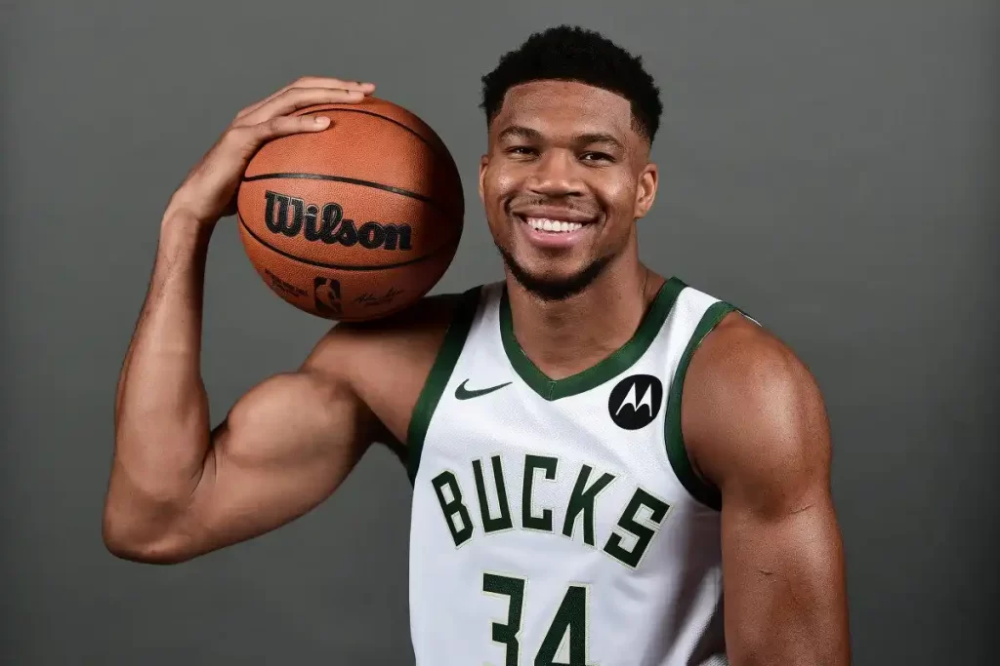
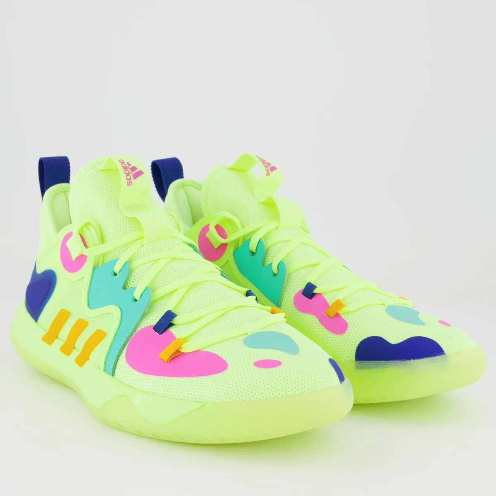
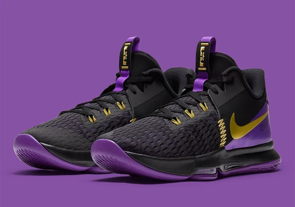
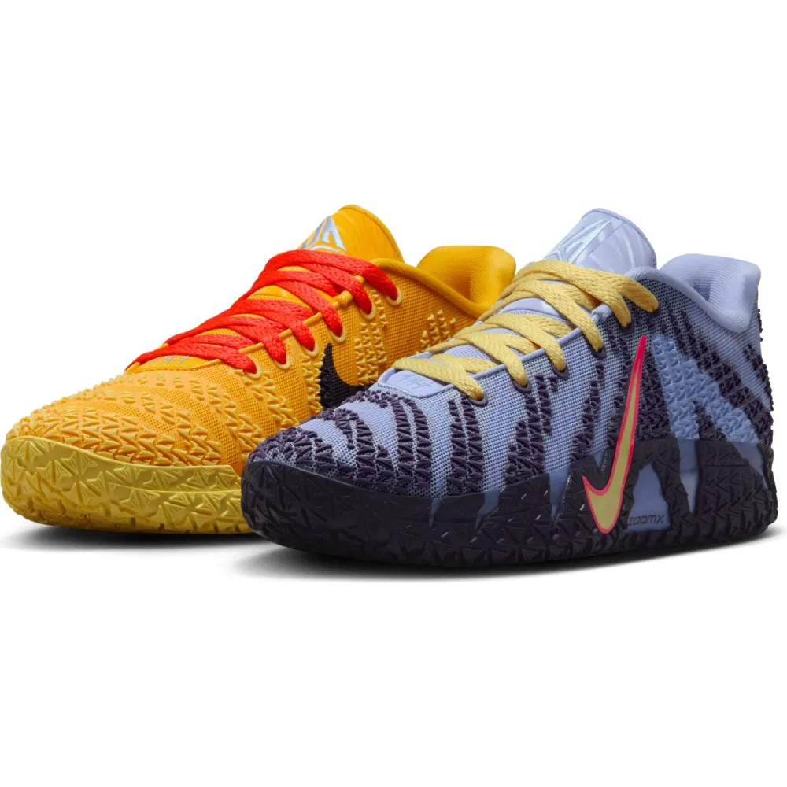
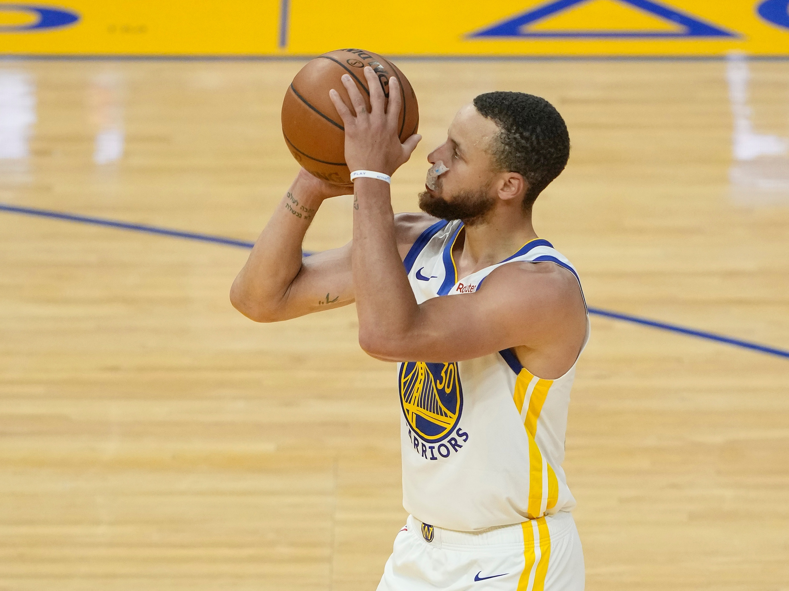

A história da NBA começa em 1946, quando um grupo de donos de arenas e dirigentes esportivos
fundou a BAA (Basketball Association of America). Naquele momento, o basquete profissional ainda era
pouco organizado e não atraía grandes públicos, mas os criadores da liga acreditavam que jogos em
grandes arenas poderiam transformar o esporte em um espetáculo mais valorizado. As primeiras temporadas
foram marcadas por equipes instáveis, mudanças de cidades e dificuldades financeiras, mas também pelo
crescimento gradual do interesse das pessoas pelo basquete profissional.
A fusão entre a BAA e NBL, 1949
Em 1949, após três anos de disputa direta com outra liga, a NBL (National Basketball
League), a BAA
decidiu se unir a ela, criando oficialmente a National Basketball Association, a NBA. Essa fusão marcou
o nascimento da liga como conhecemos hoje e representou um passo essencial para profissionalizar o
esporte. A união trouxe mais equipes, mais jogadores talentosos e uma estrutura mais sólida, permitindo
que a NBA começasse a ganhar relevância dentro do cenário esportivo dos Estados Unidos. Mesmo com
limitações técnicas e pouca visibilidade no início, a nova liga plantou as bases para se tornar, décadas
depois, a maior competição de basquete do mundo.
OS FUNDADORES
A NBA nasceu graças à iniciativa de um grupo de empresários influentes que enxergaram no
basquete
profissional um potencial de crescimento muito maior do que o que existia na época. O principal nome por
trás da criação da liga foi Maurice Podoloff, que se tornou o primeiro presidente da BAA (Basketball
Association of America), organização que daria origem à NBA. Embora ele não fosse jogador nem técnico,
Podoloff tinha experiência no comando de ligas esportivas e foi responsável por dar estrutura,
calendário e regras para o basquete profissional nos Estados Unidos.
Ao lado dele estavam figuras importantes como Walter A. Brown, presidente do Boston Garden,
que
acreditava que o basquete poderia ocupar datas vazias nas grandes arenas e atrair público consistente.
Brown foi fundamental tanto para a criação da BAA quanto, anos depois, para impulsionar a fusão com a
NBL, que resultou oficialmente na NBA em 1949. Outros executivos de arenas e franquias também
participaram desse processo, como Ned Irish, ligado ao Madison Square Garden, responsável por consolidar
o basquete como espetáculo em Nova York, e Fred Zollner, dono do Fort Wayne Pistons, considerado um dos
maiores apoiadores da unificação entre as ligas.
Esses nomes, atuando como dirigentes, investidores e visionários, foram os responsáveis por
transformar
um esporte pouco valorizado em uma liga profissional organizada, que evoluiria ao longo das décadas até
se tornar a maior competição de basquete do mundo. Sem a visão deles, a NBA não teria alcançado o
patamar global que possui hoje.

Evolução dos logos da NBA.
CRESCIMENTO DA LIGA
Após sua fundação oficial em 1949, a NBA passou por um processo lento, porém constante, de
crescimento. Nos primeiros anos, a liga ainda enfrentava dificuldades financeiras, times instáveis e
pouco interesse do público, mas foi exatamente nesse período que importantes bases foram estabelecidas.
Novas regras foram introduzidas para tornar o jogo mais dinâmico e atrativo, e as equipes começaram a se
estruturar profissionalmente, criando um ambiente mais competitivo e organizado.
Jogo de exibição de basquete nos anos 1970.
A chegada de grandes talentos, como George Mikan nos anos 50, ajudou a popularizar o esporte
e atrair
mais torcedores. À medida que a televisão se tornou parte do cotidiano americano, a NBA ganhou mais
visibilidade, permitindo que o público acompanhasse os jogos sem estar presente nas arenas. Esse avanço
tecnológico foi decisivo para ampliar o alcance da liga e transformá-la em um espetáculo nacional.
Nas décadas seguintes, o crescimento continuou de forma ainda mais intensa. Novas franquias
foram
adicionadas, a liga expandiu-se para outras regiões dos Estados Unidos e rivalidades históricas
começaram a surgir. Com jogadores lendários e maior profissionalização, a NBA consolidou-se como a
principal competição de basquete do país e iniciou o caminho para se tornar um fenômeno global. Esse
período marcou a transformação de uma liga modesta em uma potência esportiva emergente, pronta para
dominar o cenário mundial nas décadas seguintes.
AS GRANDES ERAS
A história da NBA é marcada por diferentes eras, cada uma responsável por transformar o jogo
e atrair novos públicos. Nos anos 1950, a liga começou a ganhar forma com o domínio de George Mikan e do
Minneapolis Lakers, além de importantes mudanças nas regras — como o relógio de 24 segundos — que
tornaram o jogo mais dinâmico. Essa década estabeleceu a NBA como uma liga profissional sólida e capaz
de gerar interesse nacional.
Nos anos 1960, o basquete passou por uma ascensão ainda maior graças ao domínio histórico do
Boston
Celtics, liderado por Bill Russell. A equipe conquistou 11 títulos em 13 anos, criando uma das dinastias
mais impressionantes do esporte. Ao mesmo tempo, a rivalidade entre Russell e Wilt Chamberlain elevou o
nível de competitividade e ajudou a popularizar o jogo.

Bulls de Jordan, Heat de LeBron, Boston de Bird e Lakers de Magic e Kareem.
A década de 1970 marcou a chegada de novos talentos e maior equilíbrio entre as equipes,
especialmente
após a fusão com a ABA em 1976. Jogadores como Julius Erving, Kareem Abdul-Jabbar e outros ícones
ajudaram a transformar a NBA em um espetáculo mais atlético e criativo. Apesar disso, foi nos anos 1980
que a liga viveu uma de suas eras mais icônicas, graças à rivalidade entre Magic Johnson e Larry Bird,
que levou a NBA a um patamar de fama jamais visto.
Nos anos 1990, a NBA atingiu uma dimensão global com a ascensão de Michael Jordan,
considerado por
muitos o maior jogador da história. Seus títulos, estilo de jogo e impacto cultural colocaram a liga no
centro da cultura pop mundial. A partir dos anos 2000, novas estrelas como Kobe Bryant, Tim Duncan,
Shaquille O’Neal e, mais tarde, LeBron James deram continuidade a essa expansão, com estilos modernos e
maior foco em preparação física e estratégias.
Já no século XXI, a NBA entrou na chamada “era dos três pontos”, impulsionada por Stephen
Curry e o
Golden State Warriors. O jogo se tornou mais rápido, técnico e voltado para arremessos longos, mudando
completamente a forma de jogar. Cada uma dessas eras contribuiu para fazer da NBA a liga que conhecemos
hoje — diversa, global, competitiva e em constante evolução.
Jordan, LeBron, Kobe, Bird...
GLOBALIZAÇÃO
A globalização da NBA começou a ganhar força a partir da década de 1980, quando jogos
passaram a ser transmitidos para outros países e a liga iniciou um projeto de expansão internacional. A
presença de lendas como Magic Johnson, Larry Bird e, principalmente, Michael Jordan fez com que o
basquete norte-americano se tornasse um produto cultural exportado para o mundo inteiro. A imagem de
Jordan, amplificada por campanhas da Nike e pela participação dos Estados Unidos com o “Dream Team” nas
Olimpíadas de 1992, abriu definitivamente as portas da NBA para o cenário global.
A partir daí, jogadores estrangeiros começaram a chamar atenção e ganhar espaço. Nomes como
Hakeem
Olajuwon, Dražen Petrović, Tony Parker, Manu Ginóbili, Dirk Nowitzki, Pau Gasol e Yao Ming mostraram que
talentos internacionais podiam competir em igualdade com os grandes astros americanos. Hoje, a
globalização se consolidou de maneira definitiva: muitos dos melhores jogadores da NBA são estrangeiros,
como Giannis Antetokounmpo, Nikola Jokić e Luka Dončić. A liga também realiza jogos internacionais,
investe em academias globais e mantém uma enorme base de fãs em todos os continentes. Assim, a NBA se
transformou em um fenômeno mundial e no principal símbolo do basquete global.

Giannis prova que o talento não tem fronteiras.Luka mostra que o sonho pode levar você ao topo do mundo.
A NBA NA CULTURA POP
A NBA ultrapassou há muito tempo os limites do esporte e se tornou um elemento central da
cultura pop. Desde os anos 1990, jogadores e times influenciam diretamente a moda, com uniformes, bonés,
jaquetas e camisas sendo usados como itens de estilo urbano. O basquete se tornou parte natural da
estética do hip-hop, com rappers frequentemente citando jogadores e franquias em músicas e videoclipes.
No cinema, a NBA aparece em documentários, filmes e séries; Michael Jordan estrelou “Space
Jam”, e mais
recentemente LeBron James protagonizou sua nova versão. As redes sociais amplificaram ainda mais essa
presença, transformando jogadores em verdadeiros influenciadores globais, seguidos não apenas por fãs de
basquete, mas por pessoas interessadas em moda, estilo, música e cultura. Também é comum ver atletas
colaborando com marcas, participando de videoclipes, lançando linhas de roupas e inspirando tendências
visuais. Assim, a NBA se consolidou como parte do imaginário contemporâneo, participando ativamente da
música, do cinema, do entretenimento e do estilo de vida moderno

Tênis Adidas Harden Stepback 2.

Lebron James Tênis Nike.

Nike Ja 3 "Hustle & Flow".
A LIGA NO SÉCULO XXI
A NBA do século XXI passou por transformações profundas, tanto dentro quanto fora das
quadras. No jogo em si, a maior revolução veio com a valorização do arremesso de três pontos,
impulsionada especialmente pelo Golden State Warriors e por Stephen Curry. Essa mudança alterou por
completo a forma como o basquete é jogado, tornando-o mais rápido, espaçado e dependente de movimentação
e estratégia.
Fora das quadras, a liga se tornou uma potência global de comunicação, engajando milhões de
fãs pelas
redes sociais e digitalizando sua presença no mundo. A NBA também se tornou referência em gestão
esportiva, diversidade e responsabilidade social, apoiando causas importantes e dando voz a atletas para
se expressarem em temas sociais e culturais. Novas regras, avanços tecnológicos, análise de dados e
inovações de transmissão fizeram com que o basquete se tornasse um produto moderno, interativo e cada
vez mais acessível para o público global.
Hoje, a NBA vive talvez sua fase mais internacional e inovadora, combinando talento global,
evolução
estratégica e forte presença cultural. É uma liga que se moderniza constantemente, mantendo-se como
referência máxima do basquete mundial.

A NBA do século XXI mostra que inovar é o caminho para alcançar o impossível.
A NBA NO MUNDO DOS VIDEOGAMES
A NBA sempre teve uma forte presença na cultura pop, e os videogames foram um dos principais
caminhos para aproximar ainda mais os fãs do basquete. Desde os primeiros jogos pixelados dos anos 90
até as produções realistas de hoje, a liga passou a marcar presença em praticamente todas as
plataformas, ajudando a transformar o basquete em um fenômeno global.
Nos anos 2000, duas franquias dominaram o cenário: NBA Live, da EA Sports, que por muito
tempo foi
referência, e NBA 2K, que chegou com novas mecânicas, gráficos mais avançados e modos de jogo profundos.
Com o tempo, a série NBA 2K se tornou o maior simulador de basquete do mundo, trazendo narrativas, modos
carreira cinematográficos, e representações cada vez mais fiéis dos atletas, quadras e estilos de jogo.
NBA 2K26 com Shai Alexander na capa.
Hoje, os jogos da NBA não são apenas entretenimento, mas também parte da cultura do esporte.
Eles
influenciam o modo como os fãs conhecem os jogadores, consomem estatísticas, aprendem táticas e até como
a própria liga se comunica com o público mais jovem. A presença da NBA nos videogames ajudou a
fortalecer sua imagem global e continua sendo uma ponte importante entre esporte e tecnologia.